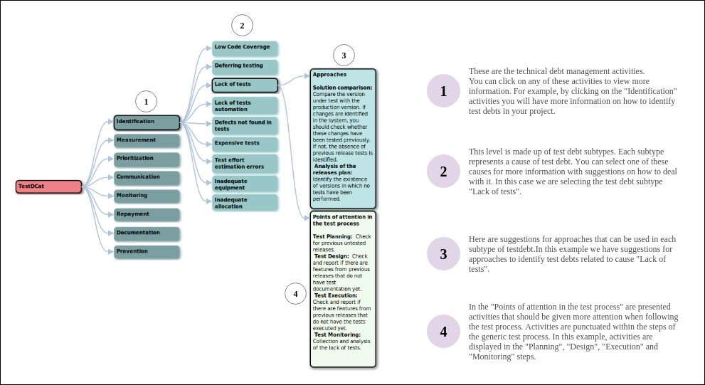

The TestDCat catalog is formed by test debt subtypes and, for each of them, a set of TD management activities is associated. Within each of these activities, there is information about "Approaches" and "Points of attention in the test process". This catalog was populated based on semi-structured interviews conducted with practitioners who perform test activities in eight projects from industry. With our catalog, we intend to help the management of test debts during the execution of software testing processes.
TestDCat follows a mind map structure. The figure below shows an example of how to use the catalog to help in the test debt management.
